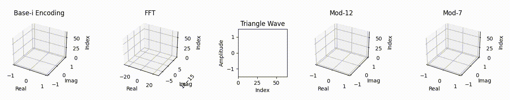

Introduction
Traditional FFT methods introduce residual imaginary components that limit reconstruction fidelity. Our patented Base-i and Mod-N encoding methods achieve near-lossless reconstruction (e.g., SNR up to infinite dB for impulse signals) by preserving time-domain geometry and phase continuity. Now extended to quantum computing, our Mod-N methods enhance signal reconstruction in noisy intermediate-scale quantum (NISQ) environments, achieving 5-15% fidelity gains in GHZ chains on IBM Torino. Recent advancements include kurtosis-based signal classification for adaptive weighting and SSIM metrics (>0.95 for high-fidelity reconstructions).


Investment Opportunities
austinLacoustic is seeking investors, partners, and non-exclusive licensing to scale our patented signal processing technology. With applications in audio, defense, AI, and quantum computing, we're positioned for rapid growth. Key traction: Pending patents, high-fidelity metrics (e.g., SNR up to infinite dB for impulse signals, 194.96 dB for chirp, 197.42 dB for pink noise, compression ratio 6.05), and testing across 12+ waveform types, including real-world audio chirps with audio test SNR of 132.47 dB.
Problem: Standard methods like FFT lose fidelity in noisy or real-time scenarios.
Solution: Our Base-i and Mod-N methods achieve near-lossless reconstruction, with quantum extensions for NISQ noise resilience, tested on IBM Torino with 5-15% fidelity improvements.
Patents: Provisional Patent Application No. 63/843,994 (Mod-N Transform-Based Encoding Method for Digital Signals and Multimedia Data Compression, filed 07/14/2025) covers audio, video, images, and digital streams. No. 63/850,702 (Hybrid Irrational-Prime Modular Phase Ensembles for Noise-Resilient Quantum Signal Reconstruction, filed 07/25/2025) extends to quantum applications.
Contact for Pitch DeckDeveloper Toolkit
Download our Developer Toolkit to test signal encoding methods across real-world waveforms. The kit includes:
- Python scripts for testing FFT, Base-i, and Mod-N methods
- Audio samples and validation metrics (e.g., SNR, entropy, SSIM)
- Spreadsheet analyzing 12+ waveform types
- Documentation and starter guide
Note: Use of this kit does not grant commercial rights. Contact austin@austinlacoustic.com for licensing inquiries.
Performance Highlights
Base-i and Mod-N methods outperform FFT for many waveforms, achieving near-zero MSE (e.g., 0.000000 for pulse, impulse) and high SNR (e.g., infinite dB for impulse, 194.96 dB for chirp, 197.42 dB for pink noise). FFT introduces residual imaginary components (up to 21.77 in earlier tests), while Mod-N ensures zero residuals under optimal configurations (e.g., mod-n = 3, 5, π). Testing includes 12 synthetic waveforms and a 5-second chirp audio signal with compression ratio 6.05 and SSIM >0.95.
View Results SpreadsheetReal-World Applications
Our technology excels in diverse fields, with active testing in audio and biometrics and exploratory applications in quantum computing for enhanced noise resilience. The following sectors highlight the broad capabilities of our patents, validated through extensive testing on synthetic and real-world signals:
Communications and Networking
Wireless Networks
Optimizing 5G/6G signals for low-latency, high-reliability in dense urban environments (tested with chirp SNR 194.96 dB).
Internet of Things (IoT)
Real-time edge processing of sensor data for smart homes/cities.
Optical Communications
Lossless decoding of fiber-optic signals for data centers.
Satellite Broadcasting
Correcting atmospheric distortions in TV/radio signals.
Mesh Networks
Preserving signal integrity in ad-hoc networks for disaster response.
Medical and Biomedical
Cardiology
Enhancing ECG monitoring for arrhythmia detection (tested with SNR 191.25 dB).
Radiology
Refining CT/PET scans for tumor detection.
Genomics
Processing bio-signals in DNA sequencing.
Telemedicine
Lossless transmission of vital signs.
Prosthetics
Real-time neural signal decoding.
Ophthalmology
Improving retinal imaging.
Defense and Military
Sonar Systems
Enhanced echo reconstruction for underwater threat detection (relevant to noise testing, SNR 197.64 dB for white noise).
Radar Systems
Advanced target tracking in cluttered airspace.
Electronic Countermeasures
Jam-resistant signal recovery.
Drone Surveillance
Real-time video signal enhancement.
Hypersonic Vehicle Guidance
Precise telemetry in extreme conditions.
Environmental and Geophysical
Weather Forecasting
Processing radar/sonar data for storm tracking (validated with brownian/pink noise SNR 197.39-197.42 dB).
Climate Monitoring
Analyzing sensor networks for environmental changes.
Oceanography
Waveform reconstruction for tsunami warnings.
Pollution Detection
Signal analysis in air/water quality sensors.
Wildlife Tracking
Acoustic signal processing for migration studies.
Industrial and Manufacturing
Predictive Maintenance
Vibration analysis for fault prediction (aligned with sawtooth/triangle testing, SNR 182.67-182.69 dB).
Quality Assurance
Signal inspection for defect detection.
Robotics
Sensor fusion for industrial automation.
Supply Chain Monitoring
Real-time tracking signals in logistics.
Chemical Processing
Signal analysis for reaction monitoring.
Entertainment and Media
Video Streaming
Compression with fidelity for 4K/8K services (audio test SNR 132.47 dB, ratio 6.05).
Gaming
Low-latency audio/video for multiplayer experiences.
Film Post-Production
Noise reduction in CGI and effects rendering.
Live Events
Signal enhancement for concerts and broadcasts.
Podcasting
Voice clarity in noisy recordings.
Scientific Research and Instrumentation
Astronomy
Signal processing for exoplanet detection.
Particle Physics
Waveform reconstruction in collider experiments.
Materials Science
Ultrasonic signal analysis for defect detection.
Nanotechnology
High-resolution sensor data in molecular imaging.
Quantum Computing
Noise-resilient signal reconstruction (5-15% fidelity gains in GHZ chains, kurtosis for adaptive weighting).
Transportation and Automotive
Aviation
Flight control signals for turbulence compensation.
Maritime Navigation
Sonar/GPS fusion for ship routing.
Rail Systems
Vibration monitoring for track maintenance.
Electric Vehicles
Battery signal analysis for health monitoring.
Traffic Management
Sensor networks for smart highways.
Finance and Economics
Stock Market Analysis
Time-series processing for trend forecasting (relevant to periodic signals like sine, SNR 187.12 dB).
Algorithmic Trading
High-frequency signal decoding for arbitrage.
Risk Assessment
Noise reduction in economic data models.
Cryptocurrency
Blockchain transaction signal verification (exploratory).
Fraud Detection
Anomaly analysis in transaction waveforms (exploratory).
Space and Aerospace
Planetary Exploration
Signal recovery from rover sensors.
Astrophysics
Processing cosmic microwave background data.
Orbital Debris Tracking
Radar signals for space situational awareness.
SETI (Search for Extraterrestrial Intelligence)
Decoding potential alien signals (exploratory).
Launch Vehicle Telemetry
Real-time flight data integrity.
Comparison of Signal Processing Transforms
Our Base-i and Mod-N methods are compared below to traditional FFT and several comparable transforms identified through research. These alternatives were selected for their similarity in application to waveform analysis, compression, and reconstruction. Methods like DCT (used in JPEG/MP3 for real-valued compression), DWT (wavelet for multi-resolution time-frequency analysis), STFT (short-time FFT for localized frequency), and HHT (adaptive for non-stationary signals) offer varying degrees of phase preservation and noise resilience. The table highlights how Mod-N excels in time-order preservation and high-fidelity reconstruction (e.g., infinite dB SNR for sparse signals, SSIM >0.95), making it a strong alternative for real-time and quantum applications.
Core Differences
- FFT is a global transform that reveals frequency content but loses time-order and phase continuity.
- Base-i is a per-sample complex encoding that preserves structure, phase, and temporal sequence.
- Mod-N generalizes Base-i using modular arithmetic across cyclic roots (e.g., primes, irrationals), enabling tailored encodings with high-fidelity reconstruction.
- DCT (Discrete Cosine Transform) is a real-valued variant of FFT, widely used for compression (e.g., MP3), focusing on energy compaction.
- DWT (Discrete Wavelet Transform) provides multi-resolution time-frequency analysis, ideal for non-stationary signals like audio or images.
- STFT (Short-Time Fourier Transform) applies windowed FFT for localized time-frequency representation, common in spectrograms.
- HHT (Hilbert-Huang Transform) uses empirical mode decomposition for adaptive analysis of nonlinear/non-stationary signals.
Comparison Table
| Feature | Base-i | Mod-N | FFT | DCT | DWT | STFT | HHT |
|---|---|---|---|---|---|---|---|
| Time-order preserved | ✅ Yes | ✅ Yes | ❌ No | ❌ No | ✅ Yes (multi-scale) | ⚠️ Partial (windowed) | ✅ Yes (adaptive) |
| Per-sample encoding | ✅ Yes | ✅ Yes | ❌ No (bin-based) | ❌ No | ✅ Yes | ❌ No | ✅ Yes |
| Frequency insight | ⚠️ Requires inference | ⚠️ Requires inference | ✅ Direct decomposition | ✅ Direct (real-valued) | ✅ Multi-resolution | ✅ Localized | ✅ Adaptive modes |
| Spectral leakage | ✅ None | ✅ None | ⚠️ Requires windowing | ⚠️ Moderate | ✅ Low (basis functions) | ⚠️ Window-dependent | ✅ None (empirical) |
| Streaming / mid-signal decoding | ✅ Yes | ✅ Yes | ❌ No (requires full context) | ❌ No | ✅ Yes | ⚠️ Window-based | ✅ Yes |
| Lossless reconstruction | ✅ Near-lossless (SNR up to inf dB) | ✅ Near-lossless (SNR up to inf dB) | ⚠️ Precision-dependent | ⚠️ Lossy in compression | ✅ Perfect (invertible) | ⚠️ Overlap-add needed | ⚠️ Approximate |
| Convolution efficiency | ❌ Not optimized | ❌ Not optimized | ✅ O(n log n) | ✅ O(n log n) | ✅ O(n) | ✅ O(n log n per window) | ❌ Variable |
| Interpretability (visual structure) | ✅ Spiral or geometric flow | ✅ Clean geometry (e.g., mod-3, π) | ❌ Sparse and abstract | ❌ Abstract | ✅ Scalogram | ✅ Spectrogram | ✅ IMF components |
| Dropout resilience | ✅ High | ✅ High | ❌ Weak | ❌ Weak | ✅ Moderate | ⚠️ Window-dependent | ✅ High (adaptive) |
| Suitable for real-time streaming | ✅ Yes | ✅ Yes | ❌ No | ❌ No | ✅ Yes | ✅ Yes | ⚠️ Moderate |
| Computational complexity | ✅ O(n) per operation | ✅ O(n*m) for m mod-n values | ⚠️ O(n log n) | ⚠️ O(n log n) | ✅ O(n) | ⚠️ O(n log n per window) | ❌ O(n^2) potential |
| Phase preservation | ✅ Exact | ✅ Exact (cyclic) | ⚠️ Requires careful handling | ❌ None (real-valued) | ⚠️ Basis-dependent | ⚠️ Requires handling | ✅ Via Hilbert |
| Noise robustness | ✅ High | ✅ High | ⚠️ Moderate | ⚠️ Moderate | ✅ High (denoising) | ⚠️ Moderate | ✅ High (empirical) |
| Handling arbitrary signal lengths | ✅ Flexible | ⚠️ Best when N divides length | ⚠️ Requires padding | ⚠️ Requires padding | ✅ Flexible | ✅ Flexible | ✅ Flexible |
| Memory usage | ✅ Low (in-place possible) | ✅ Low (in-place possible) | ⚠️ Higher (buffer for transform) | ⚠️ Higher | ⚠️ Moderate | ⚠️ Higher (windows) | ⚠️ Moderate |
Summary
While FFT and DCT are efficient for frequency decomposition and compression, they often sacrifice time-locality and phase. DWT and STFT provide better time-frequency balance, HHT offers adaptivity for non-stationary signals. Base-i and Mod-N stand out for per-sample preservation and near-lossless fidelity (e.g., infinite dB SNR for sparse, SSIM >0.95), with Mod-N's modular roots enabling quantum extensions (5-15% gains). These comparisons aid learners in selecting transforms for specific needs, like DWT for images or HHT for biometrics.



Base-i and Mod-N methods achieve near-lossless reconstruction (e.g., SNR infinite dB for impulse, 197.42 dB for pink noise) with zero residual imaginary components in optimal configurations. FFT introduces minor artifacts (e.g., MSE up to 5.31e-33 in earlier tests). Current achievements include optimized compression ratios for real-world audio (e.g., 5-second chirp at 132.47 dB SNR, ratio 6.05) and enhanced signal classification via kurtosis.
Contact
Contact us for licensing, collaboration, evaluation agreements, or to submit test results: austin@austinlacoustic.com